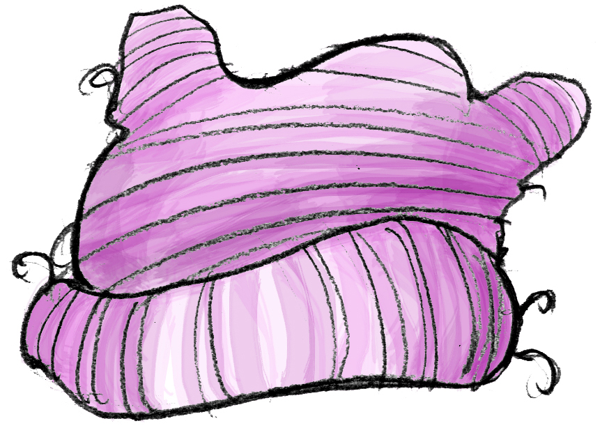

Portraits in the power of pink
<%= t.include("partials/_social.html") %>Jan. 30, 2017
Photos by Gabrielle Lurie
As millions took to the streets for women's marches around the world on Jan. 21, a new accessory emerged as the protest wear du jour: hand-knit pink "pussyhats." Chronicle photographer Gabrielle Lurie took portraits of Californians who had traveled to Washington, D.C., at a pre-march rally, and captured their reasons for participating in the record-breaking event.
<%= img.quote %>”
— <%= img.name %>, <%= img.home %>
Chronicle reporter Tony Bravo considers how a hat born out of controversy has become a powerful symbol in our country's long tradition of political activism. Read the story